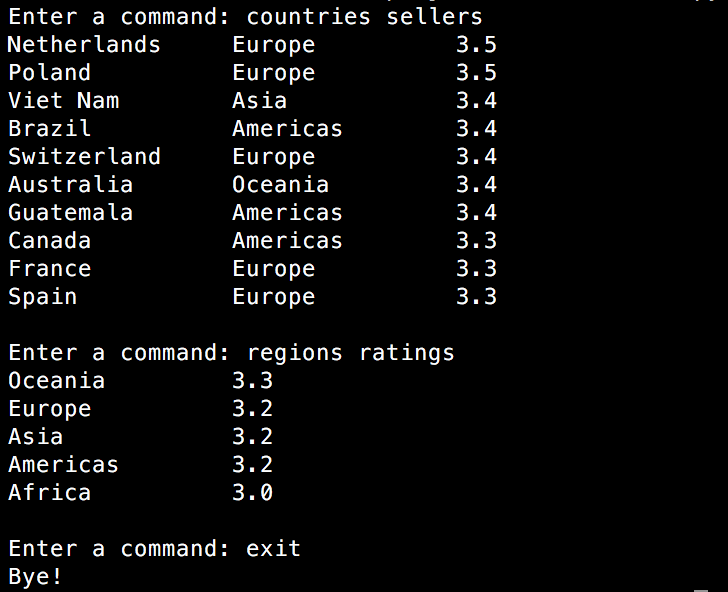
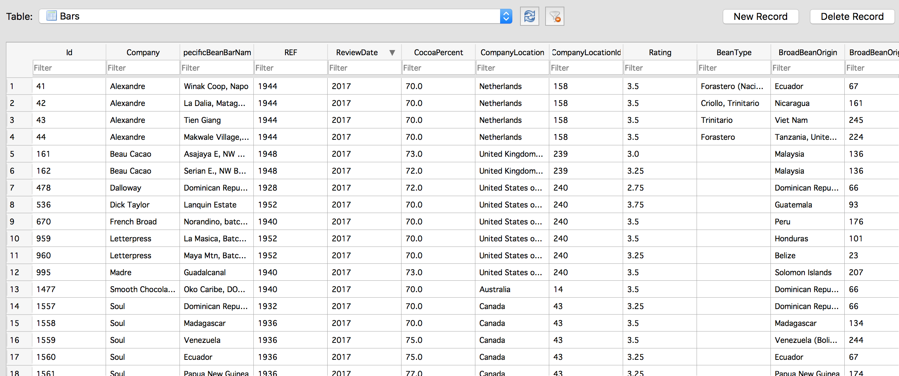
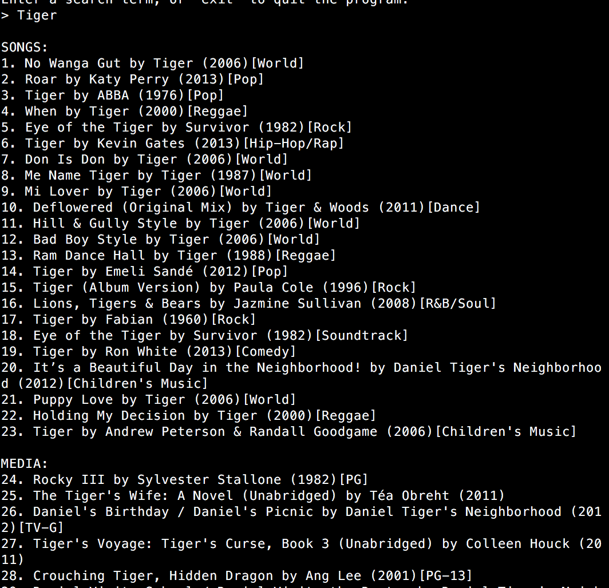

I have extensive experience using Python and SQL to create visualizations and solutions that are grounded in empiracal evidence, which helps present answers in a convincing way. These are several of my projects, and each are attached with github links that contain the code for each. Provided below are sample outputs and visualizations for the specific projects.
Using Google and Dark SkyNet APIs, created an interactive chatbot that can give weather information for any city in the world. Example queries include ‘What’s the weather like in Ann Arbor today?’, ‘Is it going to rain in London this week?’, and ‘How hot will it get in Nashville this week?’
 
Using a CSV file that contains information regarding specific companies, cocoa bean flavors, cocoa percent and rating, amongst many others, I exported all data efficiently to SQL, making it easier to interpret. Through Python commands, I ranked companies based on average rating, and found which countries and companies exported the highest amount.

Created an interactive search interface using iTunes’ API, which prompts the user to enter a keyword or artist name, in which the program will fetch the top 50 iTunes matches for the input. The user is then able to launch a preview via web browser for a song, movie, or other media that coincides with the user input.